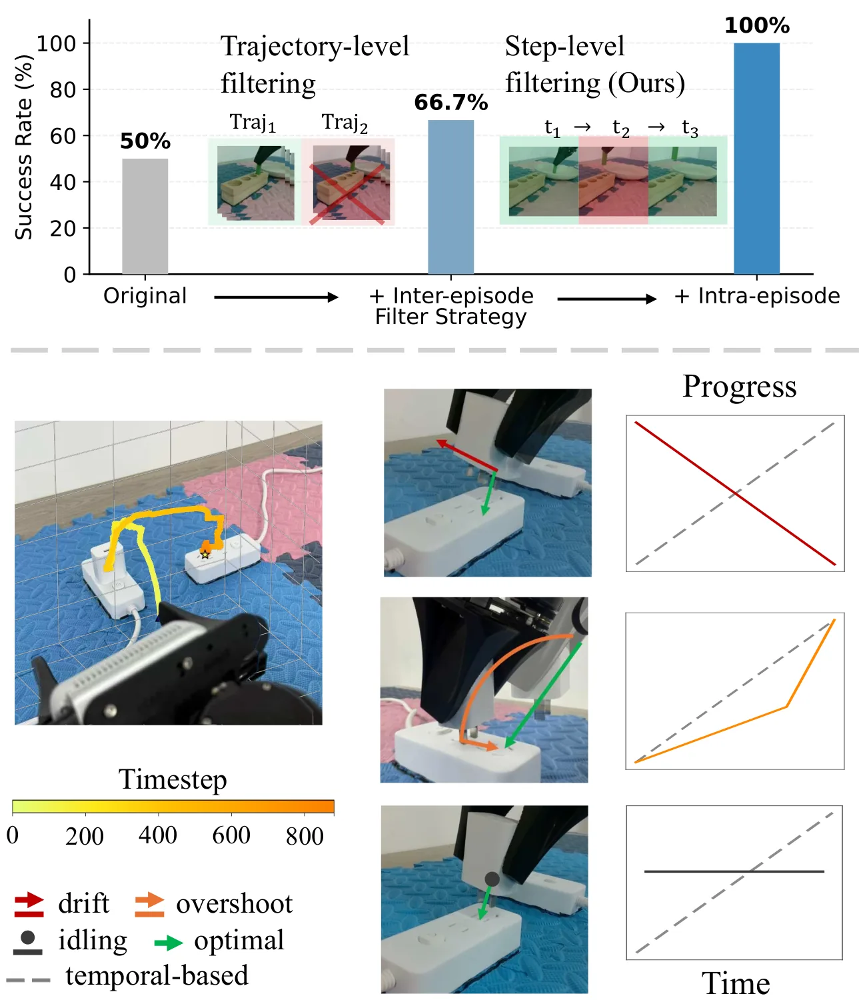
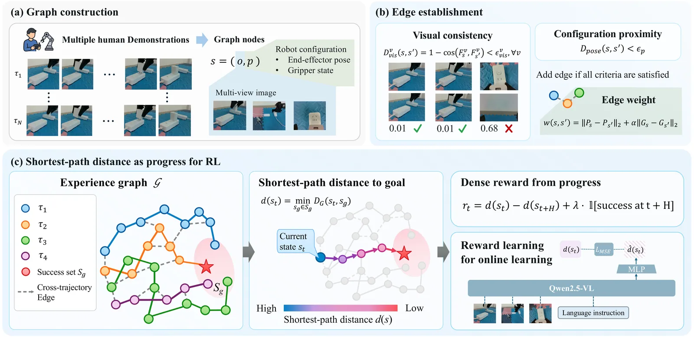
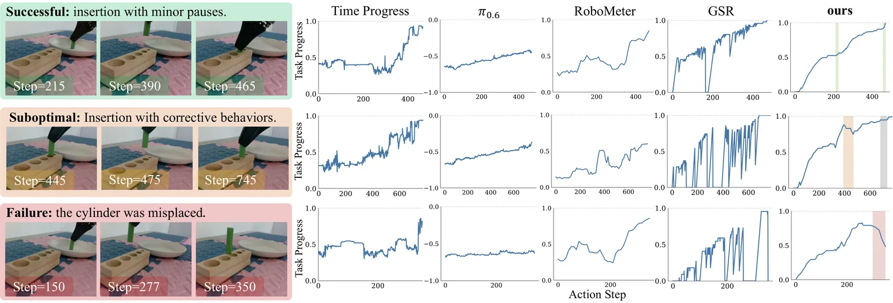
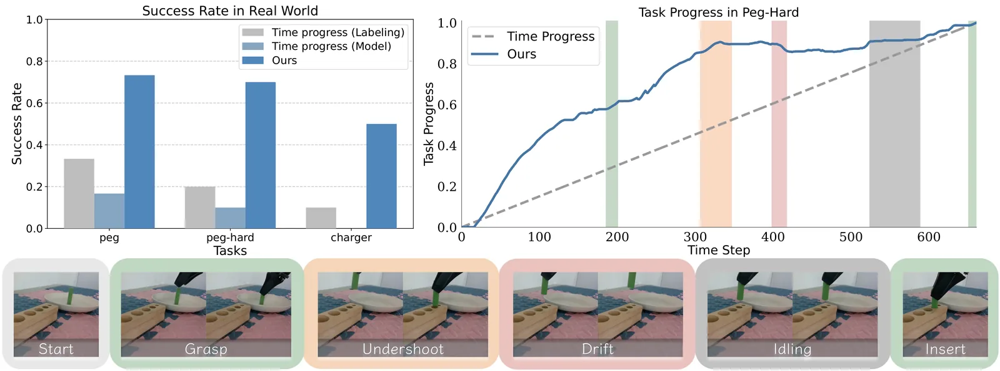

O Problema da Precisão em Robótica e a Falácia do Progresso Linear
O Aprendizado por Reforço (RL) no mundo real tem se mostrado uma via promissora para ensinar habilidades complexas de manipulação robótica. No entanto, tarefas de alta precisão, como inserir um conector de carga em uma porta estreita ou encaixar um pino em um furo exato, exigem feedback denso e preciso. Sinais binários de sucesso ou falha não são suficientes; o robô precisa saber, passo a passo, se está se aproximando ou se afastando do objetivo.
Os métodos atuais de estimativa de progresso frequentemente assumem que todas as ações dentro de uma demonstração expert contribuem igualmente para o sucesso final. Essa premissa é falha. Em cenários reais, mesmo operadores humanos introduzem comportamentos subótimos: desvios laterais não intencionais (drifting), movimentos além do alvo (overshooting) ou pausas desnecessárias (idling). Métodos tradicionais interpretam esses erros como progresso ou estagnação, corrompendo o sinal de recompensa.
Além disso, a abordagem ingênua de descartar trajetórias inteiras que falham é ineficiente. Uma trajetória pode ser bem-sucedida no geral, mas conter passos ruins que confundem o aprendizado. O paper identifica que a falta de uma priori global sobre os critérios de avaliação da tarefa é a raiz do problema. Sem essa visão holística, é impossível distinguir um avanço genuíno de um erro momentâneo.

A Solução: PRIME e a Distância Geodésica
Os autores propõem o PRIME (Progress Estimation from Imprecise Demonstrations). A ideia central é tratar o progresso não como uma função do tempo, mas como uma medida de distância no espaço de estados. Especificamente, eles buscam aproximar a distância geodésica até o sucesso. A distância geodésica é o caminho mais curto através de uma variedade executável (o conjunto de movimentos fisicamente possíveis e semanticamente corretos), em vez da distância euclidiana direta, que muitas vezes corta por estados inviáveis.
Para calcular essa distância, o PRIME não olha para uma única trajetória. Em vez disso, ele agrega experiência de múltiplas demonstrações. A hipótese é que, coletando dados suficientes de diferentes tentativas (mesmo que imperfeitas), é possível mapear a estrutura global da tarefa. Se um estado A está fisicamente próximo do estado B em termos visuais e de configuração do robô, eles devem ser conectados no espaço de aprendizado, independentemente de terem ocorrido em momentos diferentes ou em tentativas distintas.

Construção do Grafo de Experiência
O núcleo do PRIME é a construção de um grafo ponderado. Os nós do grafo são os estados observados, compostos por observações visuais multi-câmera e a configuração do robô (posição do TCP e das garras). Para extrair representações robustas desses estados, o método utiliza o DINOv3, um modelo de representação visual auto-supervisionado. O DINOv3 é escolhido por sua capacidade de distinguir estados semanticamente distintos mesmo que visualmente similares, e por ter priores de pose fortes.
As arestas do grafo representam transições possíveis. Existem dois tipos de conexões. Primeiro, conexões temporais dentro da mesma demonstração, que preservam a ordem natural dos eventos. Segundo, conexões cruzadas entre diferentes demonstrações. Uma aresta cruzada é estabelecida apenas se dois estados de trajetórias diferentes forem compatíveis. A condição de compatibilidade exige proximidade na configuração do robô e consistência visual.
Matematicamente, a similaridade visual é medida pela distância angular dos embeddings do DINOv3. Se a distância visual for baixa e a diferença na configuração do robô estiver dentro de um limiar, uma aresta é criada. O peso dessa aresta é a distância espacial, tratada como um custo de transição. Isso garante que transições fisicamente irreversíveis ou semanticamente distantes tenham custos altos ou não sejam conectadas, preservando a integridade física do mapa de progresso.
Estimativa de Progresso via Caminho Mais Curto
Uma vez construído o grafo, a estimativa de progresso para qualquer estado é definida como a distância do caminho mais curto (shortest-path) desse estado até o estado de sucesso (ou o conjunto de estados de sucesso). Esse cálculo aproxima a distância geodésica mencionada anteriormente. Se um robô está em um estado A e o caminho mais curto no grafo até o sucesso passa por estados B e C, então a distância é a soma dos custos dessas arestas.
Essa abordagem tem uma propriedade crucial: ela não assume progresso monótono ao longo do tempo. Se o robô executa um movimento de drifting (desvio lateral), o estado resultante estará conectado a nós que estão mais distantes do sucesso no grafo, aumentando a distância estimada. Isso penaliza corretamente o erro. Da mesma forma, se o robô idle (para), o estado permanece o mesmo, e a distância estimada não muda, refletindo estagnação em vez de progresso falso.
O uso de caminhos mais curtos em um grafo construído a partir de múltiplas trajetórias permite que o sistema aprenda atalhos e rotas válidas que podem não ter sido seguidos perfeitamente em nenhuma única demonstração humana. O grafo atua como um mapa de viabilidade, onde a distância é uma medida confiável de quão próximo o robô está de cumprir a tarefa, baseada na experiência coletiva.

Integração com Aprendizado de Política
O PRIME não é apenas um metricador; ele é integrado ao ciclo de aprendizado da política robótica. A distância estimada pelo grafo é usada para gerar sinais de recompensa densos. Em vez de esperar o fim da tarefa para dar uma recompensa binária, o agente recebe feedback contínuo sobre se cada ação reduziu a distância geodésica até o sucesso.
Isso é particularmente útil para o Aprendizado por Reforço Offline (Offline RL) e para o Treinamento por Imitação Supervisionada (SFT). No SFT, o modelo aprende a mapear estados para ações, mas o PRIME ajuda a filtrar quais passos são realmente instrutivos. Passos que aumentam a distância no grafo são tratados como ruído ou penalizados, permitindo que o modelo aprenda a evitar comportamentos subótimos mesmo que eles ocorram em demonstrações humanas rotineiras.
O paper destaca que a qualidade da representação visual (DINOv3) é crítica. Sem uma boa separação semântica no espaço latente, as conexões cruzadas do grafo poderiam ligar estados visualmente similares mas semanticamente opostos (por exemplo, um objeto sendo segurado corretamente vs. sendo deixado cair de um ângulo similar). O DINOv3 mitiga isso, garantindo que as conexões do grafo reflitam a física e a semântica da tarefa.

Resultados Experimentais
Os autores avaliaram o PRIME em quatro tarefas de manipulação real com um robô Piper-X: abertura de gaveta, encaixe de pino-furo (padrão e difícil), e inserção de conector de carga. Eles compararam o método contra baselines como Behavior Cloning (BC), RECAP, SARM, ViVa e RoboMeter, além de recompensas esparsas 0/1.
Os resultados mostram que o PRIME é consistentemente superior. Na tarefa de inserção de carga (Charger Insertion), que exige alta precisão, o PRIME atingiu uma taxa de sucesso de 66,7% com dados de especialista, contra 26,7% do melhor baseline (RoboMeter). Com dados ruidosos (não qualificados para imitação pura), o PRIME ainda alcançou 50% de sucesso, enquanto a maioria dos outros métodos falhou abaixo de 33%. Isso demonstra a robustez do método a dados imperfeitos.
Um ponto crucial é a melhoria em cenários de alta precisão. Na tarefa Peg-in-Hole (Hard), o ganho foi de até 3,5x em relação aos baselines. O paper argumenta que a vantagem do PRIME se torna mais pronunciada quanto maior a precisão exigida, pois é nesses cenários que os erros humanos sutis (drifting, overshooting) têm o maior impacto negativo, e a distinção fina proporcionada pelo grafo é mais necessária.
Análise de Ablação e Sensibilidade
Os autores realizaram análises de ablação para entender a contribuição de cada componente. A remoção das arestas cruzadas (usando apenas a estrutura temporal da trajetória) degradou o desempenho, confirmando que a agregação de experiência global é essencial para aprender a distância geodésica correta. Da mesma forma, o uso de uma métrica de distância euclidiana simples no espaço de embeddings, em vez do caminho mais curto no grafo, resultou em estimativas de progresso imprecisas, pois não capturava a estrutura não-linear da tarefa.
Eles também testaram a sensibilidade aos hiperparâmetros de similaridade visual e configuração. Os resultados mostraram que o método é relativamente robusto a pequenas variações nesses limiares, desde que eles sejam suficientemente restritivos para evitar conexões físicas impossíveis. A construção do grafo adiciona uma sobrecarga computacional modesta, mas viável para o treinamento offline, onde o tempo de computação não é tão crítico quanto na inferência em tempo real.
Limitações e Considerações Finais
Apesar dos resultados promissores, o paper reconhece limitações. O método depende da qualidade e da quantidade dos dados de demonstração. Se as demonstrações forem extremamente limitadas ou não cobrirem uma variedade suficiente de estados, o grafo pode ficar desconectado ou incompleto, levando a estimativas de progresso errôneas. Além disso, o uso do DINOv3, embora eficaz, requer recursos computacionais para extração de features, o que pode ser um gargalo em sistemas com restrições severas de hardware.
Outra limitação é o foco em tarefas de manipulação estática ou de baixa dinâmica. O paper não aborda explicitamente como o método se comportaria em tarefas com objetos em movimento rápido ou interações físicas complexas e imprevisíveis, onde a representação de estado pode mudar drasticamente em poucos milissegundos. A generalização para outros tipos de robôs ou ambientes também não foi extensivamente testada.
Em conclusão, o PRIME oferece um paradigma melhorado para a estimativa de progresso em robótica. Ao abandonar a suposição ingênua de progresso linear e adotar uma visão baseada em grafos de experiência, ele permite que políticas aprendam de forma mais eficiente a partir de dados humanos imperfeitos. Isso reduz a necessidade de coleta massiva de dados perfeitos e abre caminho para o aprendizado de habilidades de alta precisão em cenários reais.
O que fica
- O PRIME constrói um grafo de experiências conectando estados visual e geometricamente similares, aproximando a distância geodésica até o sucesso.
- O método ignora a suposição de que todas as ações contribuem igualmente, filtrando comportamentos subótimos como 'drifting' e 'idling' em nível de passo.
- Em tarefas de inserção de cabos e pino-furo, o PRIME aumentou a taxa de sucesso em até 5x comparado a métodos de imitação padrão.
- A abordagem é robusta a dados ruidosos, permitindo o uso de demonstrações humanas imperfeitas sem descartar trajetórias inteiras.
Paper original: Not All Actions Contribute Equally: Learning Precise Progress Estimation from Imprecise Demonstrations
Comentários
Nenhum comentário ainda. Seja o primeiro.